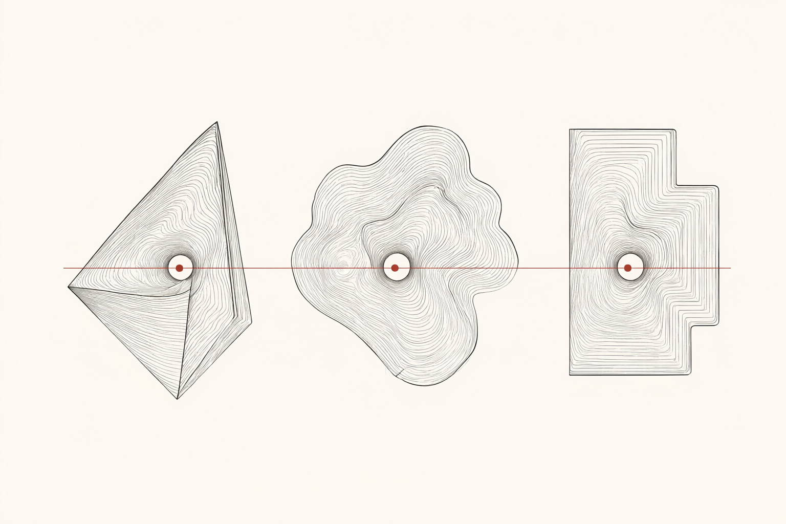
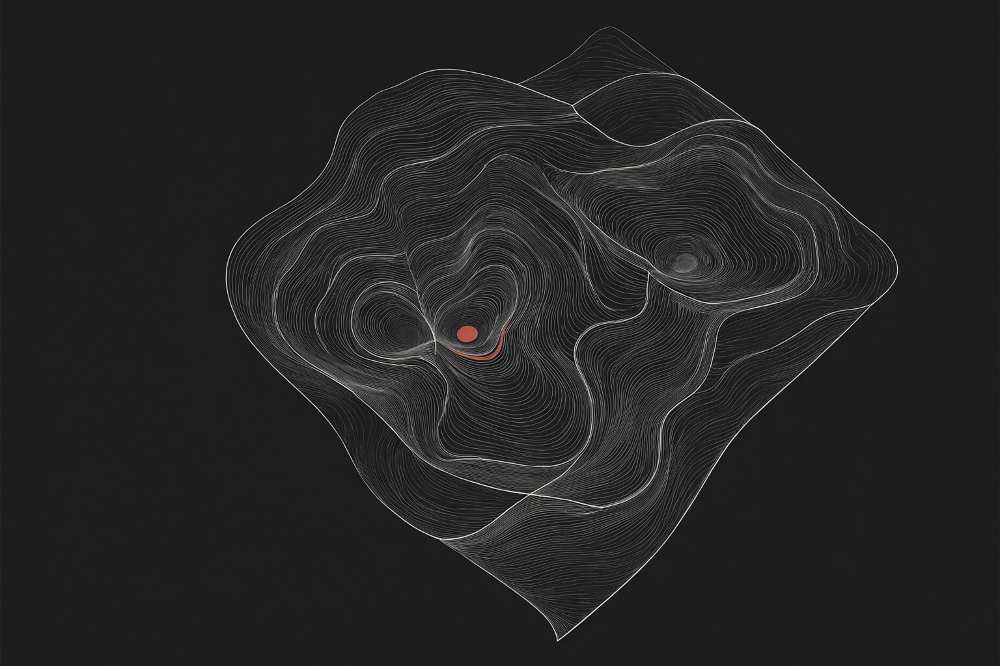

REPRESENTATION / 01
不同的形式，
相同的关系。
描述一个对象，可以有许多种方式。有时我们关心的并不是它看起来如何，而是变换之后，哪些关系仍然保持不变。

三种轮廓被同一条轴线贯穿。图像不替文字做完解释，只把值得注意的联系放到眼前。
让细节服务于理解，让留白留给思考。
ZEN · 共用设计语言。查看统一规范 ↗ · 精确绘图使用 Typst，下载 Typst 模板 ↗ · AI 配图已改为自然构图的正文示意图，下面保留早期风格探索。
01 / ZEN / RESEARCH NOTES
黑白实验出版物
用精密的线条、抽象的结构与克制的红，
为研究手记建立自己的视觉语言。

01一个有力的主体用一个构图讲清一个关系。
02线条形成秩序通过疏密、切片与遮挡表达层次。
03红色只落在重点标记一次选择、变化或联系。
02 / FOUNDATION
配色与字体沿用博客本体。图像增加表达力，阅读保持安静。
#121213#F8F7F4#DE8B82#9D4941黑白与灰阶承担主体，陶土红控制在画面约 3% 以内。正文使用高对比文字，细灰线只服务于分隔和次要结构。
我们应当知道，
我们必将知道。
中文标题与正文沿用无衬线字体，保持平实、清晰。等宽字体只用于日期、编号、代码与图注标识。公式保留数学字体。
Aa 0123456789 / Γ ⊨ φ
标题 32–48 px · 正文 16–18 px / 行高 1.8 · 图注 12–13 px
页面最大宽 1040 px，文章阅读列约 720 px。
采用 8 px 间距级差。图内安全边距约 8%。
轮廓稍强、内部线条稍细；缩小后仍有视觉重心。
每张图只突出一个红色关系或局部变化。
03 / IMAGE FAMILY
统一的是线条与秩序，题材决定形状。每篇文章有自己的图。
以连续的等高线表达语义空间，以一个红色焦点表达局部邻域。图像先建立直觉，再由正文补足解释。
早期探索 / editorial这三张样图由 Qwen Image 3.0 Pro 生成。概念图表达关系与直觉；精确算法图、数值图表和公式继续使用 Typst / SVG，标题与说明由页面排版。
04 / IN CONTEXT
图像有自己的位置，也给文字留下空间。
REPRESENTATION / 01
描述一个对象，可以有许多种方式。有时我们关心的并不是它看起来如何，而是变换之后，哪些关系仍然保持不变。

三种轮廓被同一条轴线贯穿。图像不替文字做完解释，只把值得注意的联系放到眼前。
让细节服务于理解，让留白留给思考。
05 / CONTINUITY
01 / Typst 共用规范深浅配色、两档线宽、可编辑文字和精确对齐。
02 / 从模板开始在空白 Typst 文件输入 blogdiagram，AI 补全沿用已有代码风格。
03 / Qwen 直接生图正文示意图自由构图，保留必要标签，不默认附带旧抽象参考图。
04 / 在文章中检查检查图意、标注、方向和缩小后的可读性，再决定采用。
保存 ZEN 设计语言 ↗